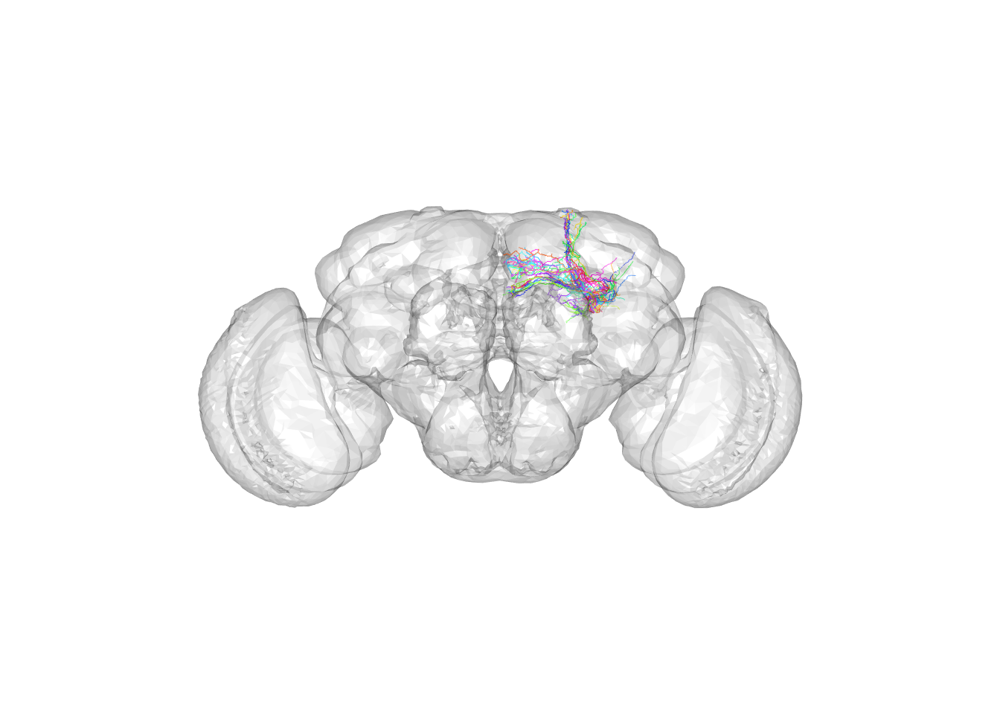
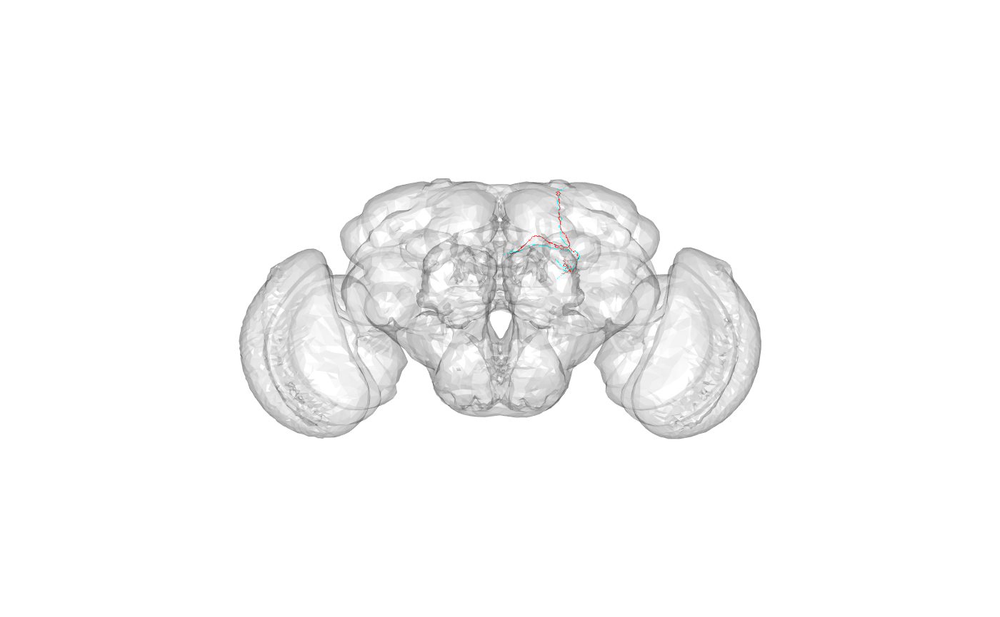
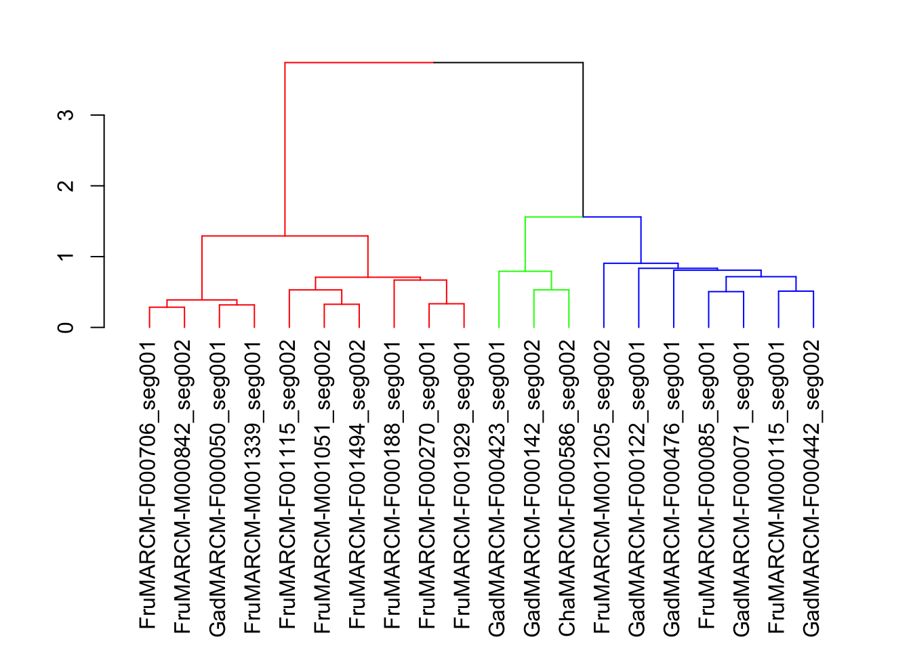
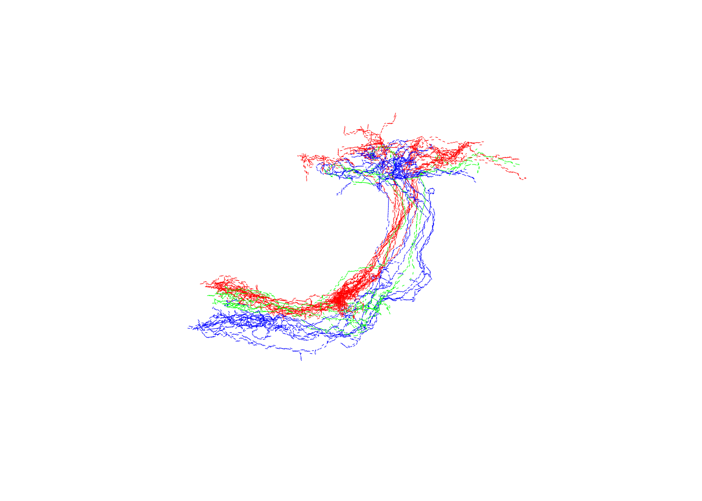
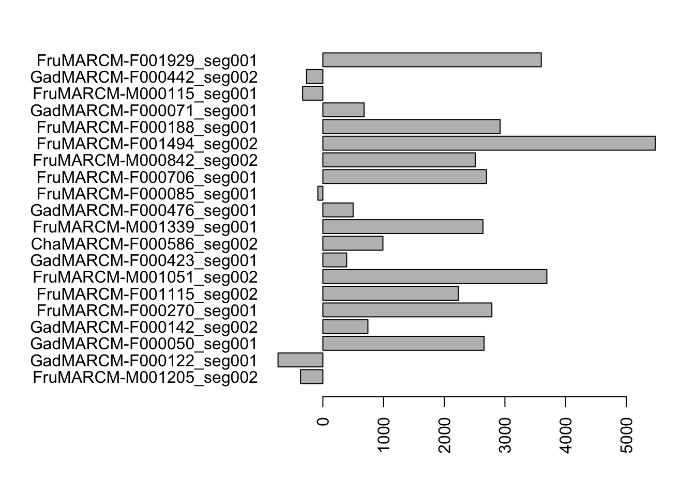
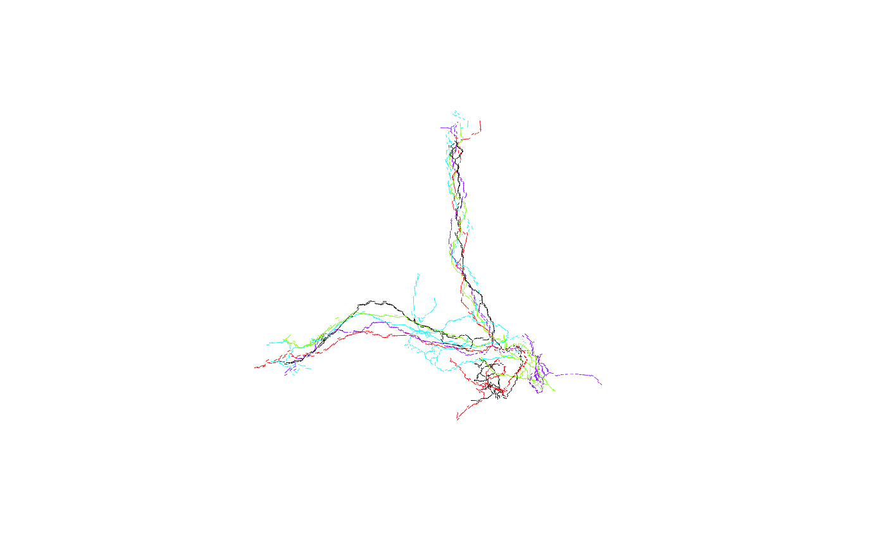
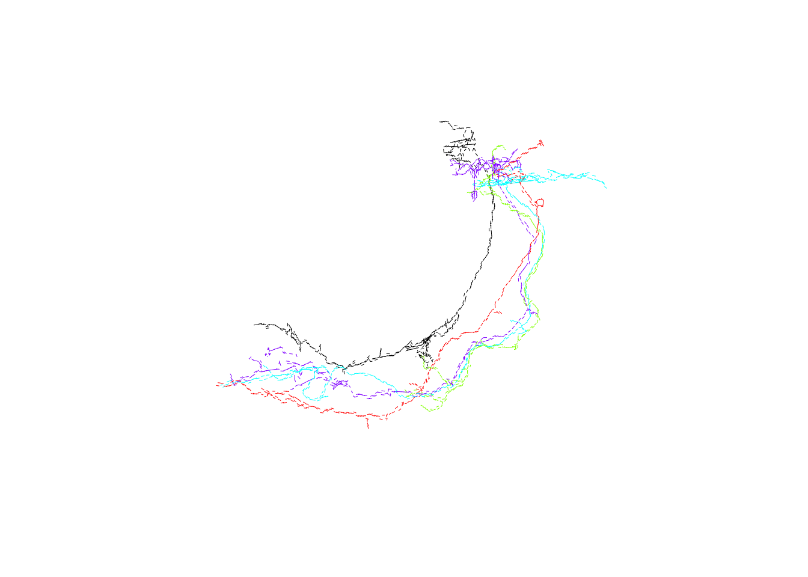

Data for various neurons can be downloaded from flybrain.mrc-lmb.cam.ac.uk and analysed using this package. The data include information on the location of the neurons in 3D space, details on innervation in different neuropils, and NBLAST scores. This quick-start guide is designed to give a brief examples of a subset of the analyses that can be carried out using this package, using an example dataset of 20 Kenyon cells.
## Loading required package: nat## Registered S3 method overwritten by 'nat':
## method from
## as.mesh3d.ashape3d rgl##
## Attaching package: 'nat'## The following objects are masked from 'package:base':
##
## intersect, setdiff, unionIn regular use in the Jefferis lab, we use the code available at https://gist.github.com/jefferis/bbaf5d53353b3944c090 to set things up to use our processed version of the complete flycircuit.tw dataset. This results in a one-off 2GB all by all NBLAST score matrix being downloaded from our website. Neurons (up to 1.3 Gb) will be downloaded when they are referenced.
However for this simple tutorial we will use a smaller dataset of 20 neurons for which demonstration data is shipped with the nat and flycircuit packages.
By default, any remote data will be downloaded to a subdirectory of the user data directory (this is identified by the rappdirs package). On this machine this is /Users/jefferis/Library/Application Support/rpkg-flycircuit/data. This location should be the same for all R sessions so that data is shared across sessions (avoiding repeated downloads).
If you wish to save data to a different location then this can be set using:
before loading the flycicruit package.
Morphological data for 20 Kenyon cells are distributed with the nat package. We can plot these 20 neurons and see where they are located in the brain:
# set default view to frontal
r3dDefaults$userMatrix=structure(c(1, 0, 0, 0, 0, -1, 0, 0, 0, 0, -1, 0, 0, 0, 0, 1),
.Dim = c(4L, 4L))
open3d()## glX
## 1
We’ll be plotting these Kenyon cells a lot, so let’s set an option that will save us some typing:
The package comes with some sample NBLAST scores for a set of 20 Kenyon cells. Each score is a pairwise comparison between two neurons. The score is asymmetric i.e. S(A,B)!=S(B,A). See ?kcs20scores for details.
The scores were computed as follows:
Show the scores for the first five neurons:
## FruMARCM-M001205_seg002 GadMARCM-F000122_seg001
## FruMARCM-M001205_seg002 3234.5412 36.80441
## GadMARCM-F000122_seg001 743.0257 3382.60124
## GadMARCM-F000050_seg001 125.6899 244.92594
## GadMARCM-F000142_seg002 1132.1102 212.54249
## FruMARCM-F000270_seg001 214.2611 261.42773
## GadMARCM-F000050_seg001 GadMARCM-F000142_seg002
## FruMARCM-M001205_seg002 -935.3377 -251.4999
## GadMARCM-F000122_seg001 -515.5338 -262.2352
## GadMARCM-F000050_seg001 4259.5719 480.4146
## GadMARCM-F000142_seg002 309.9265 4043.1766
## FruMARCM-F000270_seg001 1962.1274 254.7516
## FruMARCM-F000270_seg001
## FruMARCM-M001205_seg002 -460.0096
## GadMARCM-F000122_seg001 -145.2588
## GadMARCM-F000050_seg001 2048.0176
## GadMARCM-F000142_seg002 334.3803
## FruMARCM-F000270_seg001 4202.6258Let’s plot the two neurons that NBLAST thinks are most similar.
Find the indices of the maximum off-diagonal score in the score matrix:
# find the maximum off-diagonal (i.e. non-self match)
max_realmatch=max(kcs20scores[upper.tri(kcs20scores,diag=F)])
ind<-which(kcs20scores==max_realmatch,arr.ind=T)
queryneuron <- colnames(kcs20scores)[ind[2]]
targetneuron <- rownames(kcs20scores)[ind[1]]What was the query?
## [1] "FruMARCM-F001494_seg002"What was the target?
## [1] "FruMARCM-M001051_seg002"What do they look like and where in the brain are they?
 Look like a pair of alpha/beta core Kenyon cells.
# nb this works because options(flycircuit.scoremat="kcs20scores")
# can also set the score matrix to use explicitly
# hckc <- hclustfc(rownames(kcs20scores), scoremat=kcs20scores)
hckc <- hclustfc(rownames(kcs20scores))## The "ward" method has been renamed to "ward.D"; note new "ward.D2"library(dendroextras)
par(mar=c(12, 4, 2, 2)) # Extra margin for labels
plot(colour_clusters(hckc, k=3))
Now let’s look at the neurons:
 Good, we can see the 3 main classes (gamma, alpha’/beta’ and alpha/beta).
We know that FruMARCM-F001494_seg002 and FruMARCM-M001051_seg002 are the two most similar neurons in our subset of 20 Kenyon cells, but how do other neurons compare with FruMARCM-F001494_seg002? Let’s NBLAST it against all the other neurons and look at the scores.
results <- fc_nblast(queryneuron, names(kcs20), 'kcs20scores')
par(las=2) # Horizontal labels
par(mar=c(5, 14, 2, 2)) # Extra margin for labels
barplot(results, horiz=T) Unsurprisingly, FruMARCM-F001494_seg002 itself has the highest score (seeing as it is exactly the same as itself). Interestingly, while FruMARCM-M001051_seg002 has the second-highest score, FruMARCM-F001929_seg001 has a similarly high score, closely followed by FruMARCM-F000188_seg001 and FruMARCM-F000270_seg001. Let’s plot them all, with the query neuron in black, to see how similar they are:
 Hmm, they look pretty similar. Let’s plot the four worst hits for comparison:
 Definitely different.